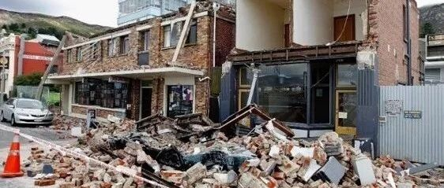

扔砖头、跳盒子，这也是做科学试验哦！ | 新论文：地震次生坠物情境中的人员疏散模拟
地震次生坠物情境中的人员疏散模拟
Pedestrian evacuation simulation under the scenario with earthquake-induced falling debris
Safety Science, 2019, 114: 61-71.
花絮
熟悉我们课题组的朋友们都知道，我们组总是很缺钱的，所以经常有各种土法上马的招数。

比如我们用不锈钢饭盒做的沙土液化实验装置

还有用麻将牌做的砌体抗震实验装置

以及用乒乓球做的边坡锚杆实验装置
所以有”双十一“这样薅羊毛的机会，怎么不拿来充分利用呢？于是在2016年，我们乘”双十一“抢了几百个纸箱，构成了这篇论文的主要试验用材。

”双十一“抢了几百个纸箱做什么？请看下文分解
研究背景
图1是我经常回顾的一张照片，是2008年汶川地震期间，在安县救灾时同事抓拍的。当时我就在想，如果在地震逃生时店铺的门面这样砸下来，就算有安全帽也是凶多吉少啊。

图1 2008年汶川地震后安县某街道
此后又过了一段时间，有一次我去北京市中心办事，走在高层建筑森林中，抬头一看，大概就是图2这样一个景象（图片来自网络）。我就在想，这要是一来地震，就算房子不倒，上面掉下点啥来，我也就交代在这里啦。

图2 现代城市中密集的高层建筑群（图片来源于网络）
于是我就开始留心历次地震中坠物次生灾害的问题。例如，图3是一个典型例子：2011年东日本大地震时候坠物和人员逃生的画面，次生坠物对人员安全造成严重威胁。

图3 2011年东日本大地震建筑外部坠物影响人员逃生
此外，坠物覆盖了道路，在建筑密集区域严重阻碍了交通。如图4所示，2011年新西兰基督城地震造成填充墙坠物，基本覆盖了一条车道宽的路面。

图4 2011年新西兰基督城地震坠物阻塞道路
目前，国内外在地震次生坠物和对人员疏散影响方面的研究还很少，几乎是一个空白。此前我们课题组就坠物对应急避难场所的影响开展过研究（详见：如何减轻建筑外围护结构脱落地震次生灾害？）。本文重点对地震次生坠物分布和人员疏散问题展开研究。
解决方案
针对地震次生坠物情形下的人员疏散模拟，本文提出了包含以下四个模块的模拟框架，如图5所示，

图5 次生坠物疏散模拟框架
首先，获取建筑宏观参数和道路信息，在GIS平台建立基础数据库，为建筑地震响应计算和疏散情境构建提供数据支持。
其次，采用城市抗震弹塑性分析的多自由度模型（MDOF）对建筑进行非线性时程分析，计算得到每个建筑各层的位移时程和速度时程。
然后，考虑到填充墙等非结构构件在达到一定的层间位移角时会发生破坏形成坠物，采用LS-DYNA模拟坠物运动和碰撞的过程，在此基础上确定坠物在地面上的分布。
最后，根据模块一和模块三数据，建立有坠物分布的疏散场景并考虑人员经过坠物覆盖区域时行进速度的变化，采用社会力模型进行人员疏散的模拟。
其中，关键需要解决两个问题：1）如何考虑砌块落地后的运动和分布；2）如何考虑坠物对人员行进速度的影响。
对于第1个问题，我们采用砌块抛掷试验验证LS-DYNA有限元模拟参数的合理性（图6），在此基础上建立各楼层填充墙的有限元模型，模拟地震中破坏后的运动和碰撞（图7），统计拟合确定坠物分布密度公式。

图6 砌块抛掷试验

图7 LS-DYNA填充墙坠物模拟
对于第2个问题，我们进行了人员运动试验，如图8所示，在跑道上设置4种障碍物密度的情形，记录人员通过时间，拟合得到障碍物密度对人员行进速度的影响。

(a) 行走情形

(b) 跑步情形
图8 人员运动试验
案例分析
下面以清华校园教学区为例，说明采用该方法得到的结果。教学区包含15栋建筑和1个操场（图9），根据中国规范要求，将操场等处划分为紧急避难场所，因此选择操场作为教学区内人员的疏散终点，疏散模拟的人员总计6230人。

图9 疏散场景示意图
研究建立了三种疏散情境，分别为：
1）无坠物情形下的人员疏散；
2）有坠物情形下的人员疏散，填充墙发生破坏时层间位移角限值取1/100；
3）有坠物情形下的人员疏散，填充墙发生破坏时层间位移角限值取1/200。
算例区域的坠物分布如图10所示，在两种有坠物情形下，A处宽度为7m的通道都完全被堵塞，说明该通道的安全风险极大。需要说明的是，该区域的坠物落地处距离建筑小于2.3m，但是由于落地后碎片的碰撞和弹跳，最终导致整个7m宽的道路都被碎片覆盖。

(a) 层间位移角限值1/100

(b) 层间位移角限值1/200
图10 坠物分布示意图
图11是疏散过程的动图，可以发现建筑1附近人员易出现拥堵。

图11 教学区人员疏散过程
由于建筑1和建筑3周围坠物堵塞情况较严重，这两栋建筑内的人员疏散距离也发生显著变化，疏散结果对比如图12所示。建筑1处的人员平均疏散距离由无坠物情形时的343m增加到有坠物情形时的494m，增加幅度达到44%。对于建筑3内的人员，1/100层间位移角限值时的疏散距离比无坠物情形下增加7%，而时间则增加25%，原因在于坠物导致了人员减速，使得人员在路程上花费了更多时间。

(a) 平均疏散距离

(b) 平均疏散时间
图12 疏散结果对比
结论
（1）本文通过砌块抛掷实验和LS-DYNA有限元模拟，给出了砌块坠物落地后的运动和分布规律；通过人员运动试验，给出了考虑坠物分布的人员行走和跑动速度变化规律。
（2）建筑密集区域的道路处于高坠物风险中，对于附近建筑内的部分人员来说，坠物的存在会显著增加疏散距离和疏散时间；
（3）当考虑砌块落地后的运动时，坠物的范围远大于未考虑时的情形，因此有必要在计算坠物分布时加以考虑。
（4）本文提出的方法能够计算地震下建筑的坠物分布情况，识别高坠物风险的道路并量化坠物对人员疏散的影响，可以为震后应急疏散、城市规划提供决策依据和技术支持。

本文作者：杨哲飚
后记
随着中国现代化的发展，其实有大量的新问题、新风险迫切需要解决。深入灾区，深入现场，发现问题，防患于未然，防灾减灾事业任重道远。
------End------
相关研究
长按识别二维码，关注我们的科研动态